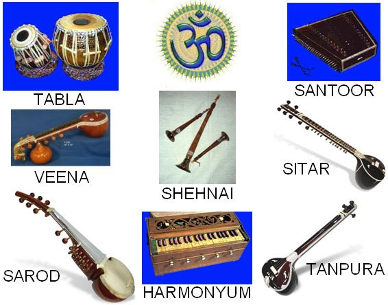

Hint müziğinin tarihçesi binyıllar ötesine, Veda devrine kadar geri gider. Pek çok Hint ilahisi melodilerle okunarak günümüze dek taşınmıştır. Samaveda "Melodi Bilgisi" dir ve Rigveda ilahilerinin nasıl okunacağını gösterir.
En eski "Müzik ve Dans Bilgisi" kitabı, Gandharva Vedalardır. Eserin yazarı olarak Muni Bharata gösterilir ve mitolojideki göksel şair ve müzisyenlerin adı olan Gandharvaların ismini taşır. Gene yazarı olarak Bharata gösterilen Natyaşastra da, yaklaşık 3 .yüzyıla tarihlendirilen ünlü bir dans, müzik ve dram eseridir.
Hint geleneğinde müziğin büyük önemi vardır. Dinsel duaları okumada gösterilen disiplin, müziğin gelişmesine yaramıştır. Zamanla insanların duyguları, yerel kültürlerin karışımı ile müziği zenginleştirmiştir. Hint müziği birçok ölçü, renk ve melodi kazandı. Hint notalarının isimleri şöyledir;
| SA | Rİ | GA | MA | PA | DHA | Nİ | SA |
| do | re | mi | fa | sol | la | si | do |
Raga "renk" anlamına gelen bir sözcüktür. Müzikal anlamda ise "nota, armoni, melodi" anlamlarına gelir. Biz bu sözcüğü "melodi" veya "makam" anlamında kullanıyoruz. Bharata, altı tane raga saymaktadır. Bhairava, Kauşika, Hindola, Dipaka, Şri-raga, Megha. Her biri ayrı bir heyecanı yansıtır. Bazı yazarlar yedi, bazıları 26 tane raga sayarlar. Bunları kişileştirip 6 ragayı 5-6 dişi raga, yani Ragin ile birleştirip yeni yeni müzikal tonlar elde ederler. Her raga, gündüzün veya gecenin bir zamanıyla ilgili ve uyumludur. Mevsimlere uygun ragalar da vardır. Tala sözcüğü ise "müzik ölçüsü, ritim" anlamlarına gelir. Bazı önemli ragalar şunlardır:
Bilaval = Hareketli,neşeli
Lalit = Berrak, duygulu sabah melodisi
Todi = Yumuşak sabah ragası
Sarang = Günortası ragası
Bhup = Yumuşak akşam ragası
Des = Aşk dolu gece ragası
Malkauns = Gece yarısı ragası
Bhairavi = Şafak sökerken, bazen de geniş anlamlı
Megh Malhar = Yağmur ve gökgürültüsünü betimler
Dipak = Şimdi kullanılmıyor, kullananın öldüğüne inanılmıştır

Ring Ring Ringa